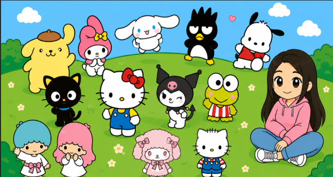
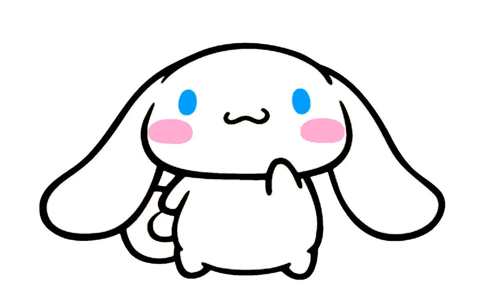
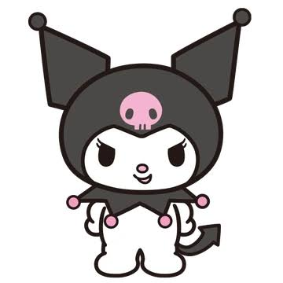
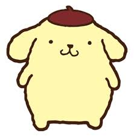
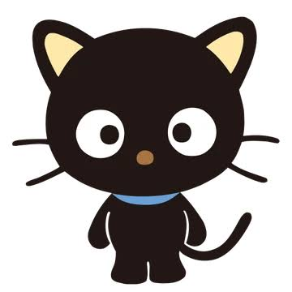
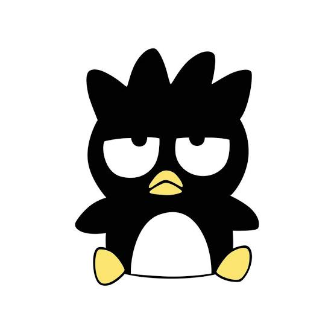
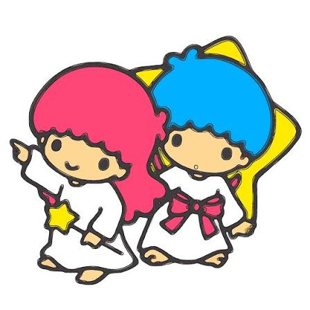
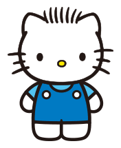
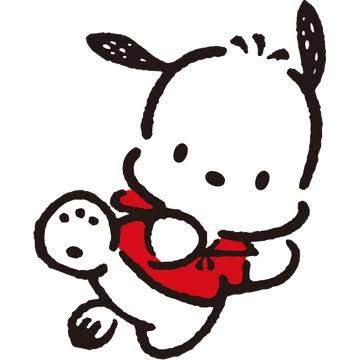
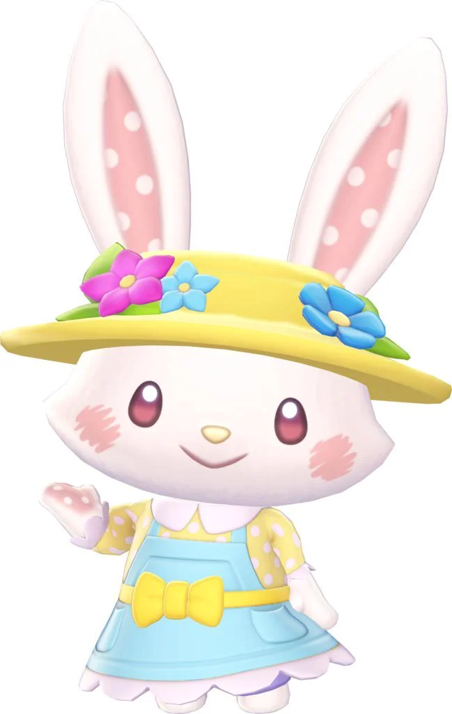

Conheça os bichinhos mais fofinhos ❤️
Bem vindo! Tenho certeza que bichinhos mais fofos que esses você não acha em qualquer lugar, venha conhecer! :)
Venha conhecer!
Bem vindo! Tenho certeza que bichinhos mais fofos que esses você não acha em qualquer lugar, venha conhecer! :)


A gatinha branca, personagem central do programa, vive em Londres, muito amigável e fofa.

Coelhinha branca que usa touca rosa, uma das melhores amigas da Hello Kitty, é muito doce.

É um cachorrinho branco que consegue voar com suas orelhas enormes, é amigo da Hello Kitty.

É rival da My Melody, mas também faz parte do grupo de personagens. Tem uma personalidade travessa.

É um cachorro que adora comer pudim e passar tempo com os amigos.

É um gatinho preto e inteligente, bem curioso

É um sapinho alegre e aventureiro, é um dos amigos da Hello Kitty.

É um pinguim com personalidade mais rebelde e brincalhona. Apesar da cara séria, é um personagem divertido.

São irmãos gêmeos que vivem no mundo das estrelas e fazem parte do universo Sanrio.

É um gatinho amigo de infância da Hello Kitty e seu namorado.

É um cachorrinho esportista, brincalhão e muito ativo. Também é amigo da Hello Kitty.

É uma personagem da Sanrio que representa uma ovelhinha doce, delicada e sonhadora.